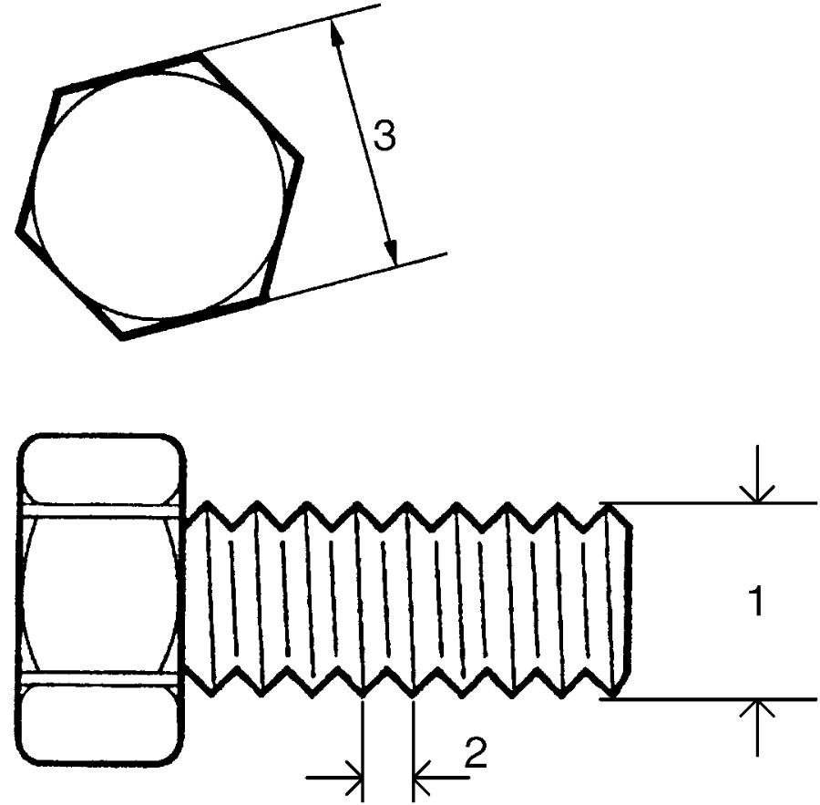
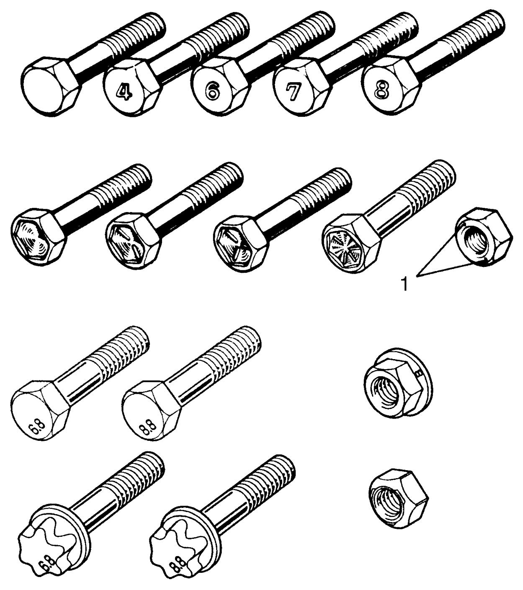
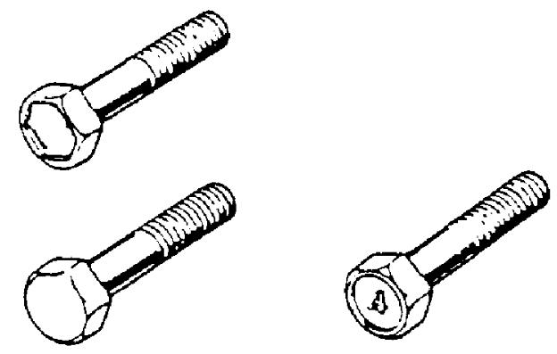
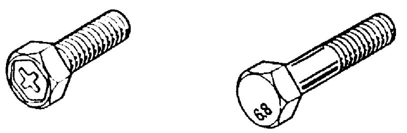
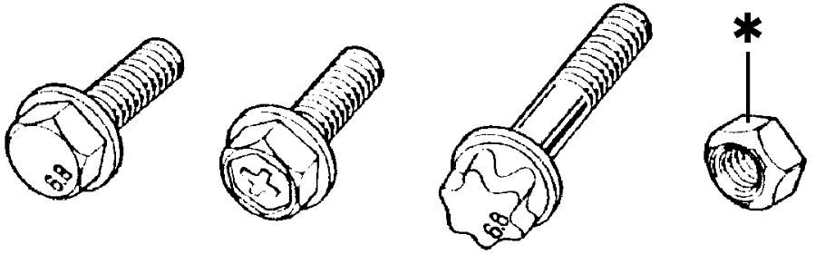
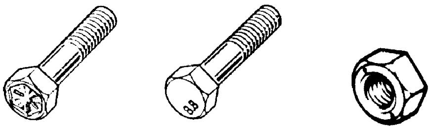
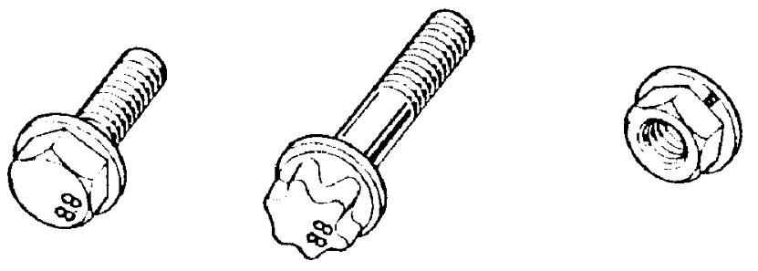

0A
| Fasteners Information |
Metric Fasteners
Most of the fasteners used for this vehicle are JIS-defined and ISO-defined metric fasteners. When replacing any fasteners, it is most important that replacement fasteners are of the correct diameter, thread pitch and strength.
NOTICE:
Combining male and female fasteners with different thread pitches will damage both fasteners.
It is important to note that, even when the nominal diameter (1) of the threads is the same, JIS-defined and ISO-defined fasteners may be different in thread pitch (2) or width across flats (3). Refer to the following table for these differences.
Before installing a fastener, check it for correct thread pitch and then, screw it in or on the mating fastener by hand. If the fastener is too tight to turn by hand, its thread pitch may be different from that of the mating fastener.
JIS-to-ISO main fasteners comparison table
| Nominal diameter | ||||||
|---|---|---|---|---|---|---|
| M6 | M8 | M10 | M12 | M14 | ||
| JIS | Thread pitch | 1.0 | 1.25 | 1.25 | 1.25 | 1.5 |
| Width across flats | 10 | 12 | 14 | 17 | 19 | |
| ISO | Thread pitch | 1.0 | 1.25 | 1.5 | 1.5 | 1.5 |
| Width across flats | 10 | 13 | 16 | 18 | 21 | |

 "Expand image")
Fastener Strength Identification
Most commonly used strength classes of metric fasteners are 4T, 6.8, 7T and 8.8. Strength class is indicated by a number or radial line(s) embossed on the head of each bolt. Some metric nuts have a punched number, 6 or 8 on their end surfaces. Figure shows different strength markings.
When replacing metric fasteners, use bolts and nuts of the same strength class as or higher class than the original bolts and nuts. It is also important to select replacement fasteners of the correct diameter and thread pitch. Correct replacement bolts and nuts are available as SUZUKI spare parts.
Metric bolts and nuts: Strength class numbers or marks (The larger the number, the greater the strength).

 "Expand image")
| 1. | Nut strength identification |
Standard Tightening Torque
Each fastener should be tightened to the torque specified in each section. If no torque description or specification is provided in the relevant section, refer to the following tightening torque chart for the applicable torque for each fastener. When a fastener of greater strength than the original one is used, use the torque specified for the original fastener.
NOTE:
•The following chart is applicable only where the fastened parts are made of steel or light alloy.
•Tightening torque in this chart is also applied to the fastener with cotter pin.
•Tightening condition for the fastener is dry. Therefore, tightening torque in this chart cannot be applied to the fastener with oily thread and/or bearing surface.
•When tightening a fastener of 6.8, 7T or 8.8 strength to a weld nut, apply tightening torque to the corresponding fastener of 6.8 strength.
•Tightening torque in this chart is also applied to the fastener with cotter pin.
•Tightening condition for the fastener is dry. Therefore, tightening torque in this chart cannot be applied to the fastener with oily thread and/or bearing surface.
•When tightening a fastener of 6.8, 7T or 8.8 strength to a weld nut, apply tightening torque to the corresponding fastener of 6.8 strength.
Tightening torque chart
| Strength | Unit | Thread diameter (Nominal diameter) (mm) | ||||||||
|---|---|---|---|---|---|---|---|---|---|---|
| 4 | 5 | 6 | 8 | 10 | 12 | 14 | 16 | 18 | ||
| Fastener of strength class equivalent to 4T | N·m | 1.5 | 3.0 | 5.5 | 13 | 29 | 45 | 65 | 105 | 160 |
| kgf-m | 0.15 | 0.30 | 0.55 | 1.3 | 2.9 | 4.5 | 6.5 | 10.5 | 16 | |
| lbf-ft | 1.0 | 2.5 | 4.0 | 9.5 | 21.0 | 32.5 | 47.0 | 76.0 | 116.0 | |
|

 "Expand image") |
||||||||||
| Fastener of strength class equivalent to 6.8 | N·m | 2.4 | 4.7 | 8.4 | 20 | 42 | 80 | 125 | 193 | 280 |
| kgf-m | 0.24 | 0.47 | 0.84 | 2.0 | 4.2 | 8.0 | 12.5 | 19.3 | 28 | |
| lbf-ft | 2.0 | 3.5 | 6.0 | 14.5 | 30.5 | 58.0 | 90.5 | 139.5 | 202.5 | |
|

 "Expand image") |
||||||||||
| Flanged fastener of strength class equivalent to 6.8 *: Self-locking nut (6 strength) |
N·m | 2.4 | 4.9 | 8.8 | 21 | 44 | 84 | 133 | 203 | 298 |
| kgf-m | 0.24 | 0.49 | 0.88 | 2.1 | 4.4 | 8.4 | 13.3 | 20.3 | 29.8 | |
| lbf-ft | 2.0 | 3.5 | 6.5 | 15.5 | 32.0 | 61.0 | 96.5 | 147.0 | 215.5 | |
|

 "Expand image") |
||||||||||
| Fastener of strength class equivalent to 7T | N·m | 2.3 | 4.5 | 10 | 23 | 50 | 85 | 135 | 210 | 240 |
| kgf-m | 0.23 | 0.45 | 1.0 | 2.3 | 5.0 | 8.5 | 13.5 | 21 | 24 | |
| lbf-ft | 2.0 | 3.5 | 7.5 | 17.0 | 36.5 | 61.5 | 98.0 | 152.0 | 174.0 | |
 "Expand image") |
||||||||||
| Fastener of strength class equivalent to 8.8 (bolt) or 8 (nut) | N·m | 3.1 | 6.3 | 11 | 27 | 56 | 105 | 168 | 258 | 373 |
| kgf-m | 0.31 | 0.63 | 1.1 | 2.7 | 5.6 | 10.5 | 16.8 | 25.8 | 37.3 | |
| lbf-ft | 2.5 | 4.5 | 8.0 | 19.5 | 40.5 | 76.0 | 121.5 | 187.0 | 270.0 | |
|

 "Expand image") |
||||||||||
| Flanged fastener of strength class equivalent to 8.8 (bolt) or 8 (nut) | N·m | 3.2 | 6.5 | 12 | 29 | 59 | 113 | 175 | 270 | 395 |
| kgf-m | 0.32 | 0.65 | 1.2 | 2.9 | 5.9 | 11.3 | 17.5 | 27 | 39.5 | |
| lbf-ft | 2.5 | 5.0 | 9.0 | 21.0 | 43.0 | 82.0 | 126.5 | 195.5 | 286.0 | |
|

 "Expand image") |
||||||||||
*: Self-locking nut